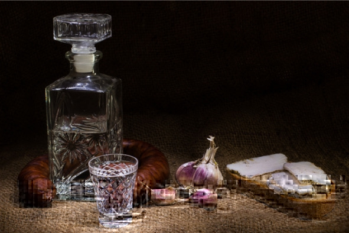
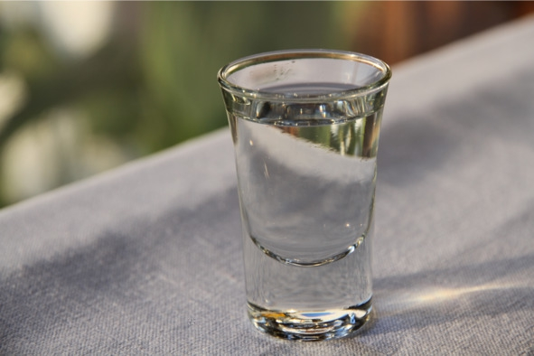

Понятие, виды и сорта водки
Водка (англ. vodka) – бесцветный спиртной напиток крепостью 37,5—56% об., произведенный на основе ректификованного этилового спирта из пищевого сырья и исправленной (умягченной) воды.
Выделяют два вида водки:
– обыкновенная (37,5—56% об.) – простая водно-спиртовая смесь, не содержащая других компонентов, в состав входит только спирт и вода. Вкус зависит от концентрации спирта и качества воды. Обыкновенные виды представлены такими сортами водки как «Пшеничная», «Обыкновенная старорусская», «Сибирская», «Экстра»;
– особая (37,5—45% об.) – содержит ароматические и вкусовые добавки, смягчающие жгучий вкус спирта. К особым водкам относятся: «Столичная», «Посольская», «Русская», «Московская особая» и «Российская».
Сорта водкиВодку делят на сорта в зависимости от качества спирта, крепости, технологии фильтрации, вкусовых и ароматических добавок в составе. Все эти показатели учитывают в комплексе. Современные производители, лишь немного изменив рецептуру и технологию, сразу же считают свой продукт новым уникальным сортом водки. В сложившейся ситуации целесообразно рассматривать только те сорта, которые были разработаны еще в СССР:
– «Московская особая» (40% об.) – считается водочным эталоном, изготавливается только из спиртов класса «экстра» и «люкс» (самых качественных);
– «Русская» (40% об.) – для приготовления используется спирт высшей очистки и специально подготовленная вода. Эта водка тоже считается эталонной, но ее качество несколько ниже, чем у «Московской»;
– «Старорусская» (40% об.) – имеет характерный водочный аромат, его предпочитают истинные ценители водки;
– «Столичная» (37—42% об.) – считается одной из лучших российских водок в мире. От остальных сортов отличается мягкостью, утонченным ароматом и отсутствием примесей;
– «Пшеничная» (40% об.) – изготовляется из отборного пшеничного сырья. Вкус мягкий без сторонних оттенков;
– «Посольская» (40% об.) – элитный сорт крепкой водки из спиртов класса «экстра». Отличается кристальной прозрачностью и полным отсутствием запаха. Для очистки используется молоко;
– «Лимонная» (40% об.) – водка с ярко выраженным запахом лимона, подавляющим вкус спирта;
– «Сибирская» (45% об.) – традиционная русская водка, изготовляемая по стандартной технологии, отличается повышенным содержанием спирта;
– «Юбилейная» (45% об.) – производится на основе спирта класса «люкс» и экстракта ягод можжевельника;
– «Крепкая» (56% об.) – название говорит само за себя. Водка содержит максимально разрешенную ГОСТ концентрацию спирта;
– «Перцовка» (37,5—40% об.) – знаменита широким спектром добавок, основной из которых является перец;
– «Экстра» (40% об.) – производится из одноименного класса спирта. В зависимости от рецептуры вместе с питьевой водой в состав могут добавляться другие компоненты;
– «Охотничья» (56% об.) – имеет слегка горьковатый вкус;
– «Столовая» (40% об.) – в состав добавляют настой из овсяных хлопьев.
Технология производства водкиВесь цикл состоит из следующих этапов:
1. Подготовка воды. Сначала технологи корректируют солевой состав, чтобы содержание солей было минимальным. Затем воду очищают методами отстаивания, аэрации и фильтрации через угольные фильтры и (или) кварцевый песок. На некоторых предприятиях применяется дополнительная молекулярная и ультрафиолетовая очистка. Воду нельзя кипятить или дистиллировать, иначе водка получится жесткой и потеряет уникальный вкус.
2. Получение и очистка спирта. Основным сырьем для производства водочного спирта является пшеница. В сусло также можно добавлять небольшое количество ячменя, кукурузы, проса, гороха или другого пищевого крахмалосодержащего сырья.
Злаки перемалывают на муку, потом заваривают под давлением в специальных колоннах и осахаривают – превращают крахмал в простые сахара под воздействием ферментов. Далее сусло поступает в чаны для брожения, туда же добавляют дрожжи. Готовая брага подается в перегоночные колонны для получения спирта-сырца, а затем в ректификационные – для его очистки.
Ректификованный спирт из пищевого сырья подразделяют на:
– спирт первого сорта – для производства алкогольной продукции не используется;
– спирт высшей очистки – изготавливается из смеси зерна, картофеля, сахарной свеклы, черной патоки (в любых пропорциях). Подвергается минимальной фильтрации от сивушных масел и примесей. Из него делают настойки, ликеры и водку эконом-сегмента;
– «базис» – производится из зерна и картофеля в любых пропорциях, но содержание картофельного крахмала в исходном сырье не может быть больше 60%. Из этого спирта изготавливают водку среднего ценового сегмента;
– «экстра» – производится из того же сырья что и «базис». За счет лучшей очистки отличается меньшим содержанием метанола и сложных эфиров. Этот спирт также используется для изготовления водки среднеценового сегмента;
– «люкс» – производится из зерна и картофеля в любых пропорциях, но содержание картофельного крахмала не может быть больше 35%. Спирт проходит несколько степеней фильтрации. Из него изготавливают водку премиум-сегмента;
– «альфа» – изготавливается исключительно из зернового сырья (пшеницы или ржи). Этот спирт содержит меньше всего примесей, его используют для производства водки супер-премиум-класса.
3. Сортировка. Процесс получения водно-спиртовой смеси. Спирт и воду в нужных пропорциях подают в закрытые сортировочные чаны, где смешивают специальными устройствами. Затем добавляют другие ингредиенты, если они предусмотрены рецептурой.
4. Фильтрация смеси. В большинстве случаев используется кварцевый песок. Смесь воды и этилового спирта поступает из бака на специальный очистной фильтр, после чего перетекает в следующий чан. По мере накопления осадок начинает мешать нормальной фильтрации. Спустя некоторое время кварцевые фильтры нуждаются в чистке. Этот момент определяют по высоте слоя осадка.
5. Очистка. На данном этапе формируются органолептические характеристики водки. Угольными фильтрами напиток очищают от альдегидов и эфиров. В зависимости от желаемого качества готового продукта фильтрацию активированным углем могут проводить несколько раз.
6. Ассимиляция. Процесс отстаивания готовой спиртоводной смеси. Согласно стандартам ассимиляция должна длиться не менее двух суток. Но опытные технологи утверждают, что это слишком короткое время, и на многих ликеро-водочных заводах отстаивание водки длится до семи суток.
7. Розлив в бутылки. Бутылки проверяют на целостность, затем ополаскивают водой. Для наполнения используют специальные автоматические линии. Сначала водку наливают в бутылку, которую потом закупоривает пробкой. Заключительная стадия – нанесение этикетки.
Краткая история водки и самогоноварения на РусиСегодня под термином «водка» мы подразумеваем разбавленный ректификат, однако так было не всегда. Раньше этим словом обозначались фактически любые дистилляты. Крепость таких самогонок достигала 75% об. Единой терминологии не было, так что в дальнейшем, чтобы избежать путаницы, будем называть водкой только современное исполнение, оставив для более ранних вариаций слово «самогон» (хотя в обиход оно вошло гораздо позднее, а в те времена такие напитки назывались горячим вином).
Первыми технику дистилляции освоили арабские алхимики в VII – VIII веках. Но для них спирт-дистиллят был лишь основной для лекарственных настоек, которые, в свою очередь, использовались только для растирания, так как Коран не поощряет употребление алкоголя.
Доподлинно неизвестно, когда на Руси научились гнать самогон. По некоторым источникам первое задокументированное свидетельство производства «жженой воды» датируется концом IX века, а первое промышленное производство появилось двумя веками позже, однако из-за несовпадения терминов с уверенностью это утверждать нельзя. Польша заявляет, что честь изобретения зернового дистиллята принадлежит именно ей, но на территории Речи Посполитой перегоняли виноградное вино, так что речь идет о бренди. Зато термин «водка», скорее всего, именно польский, происходит от слова «wodka» и имеет уменьшительное значение – что-то вроде «водичка» или «маленькая вода».
По одной из версий, водку в ее более-менее современном виде (уже на основе зерна, но еще без применения ректификационной колонны) придумал монах Исидор в 1430-х годах. Он назвал свое изобретение «хлебным вином». Британские послы, посетившие Москву в XIV веке, утверждали, что к тому времени самогонка уже стала национальным алкоголем, а из новгородских хроник 1533 года становится понятно, что крепкие спирты использовались не только в гастрономических, но и в медицинских целях. Методы производства были далеки от совершенства, поэтому в напитки после перегонки нередко добавляли отдушки: специи, травы, фруктовые эссенции. Также иногда самогон замораживали (чтобы примеси выпали в осадок), выдерживали, фильтровали.
В 1450 году объемы промышленного производства самогонки расширились настолько, что нужды внутреннего рынка были полностью удовлетворены, и в 1505 году произошел первый экспорт «огненной воды» в Швецию. К 1716 году все винокурни принадлежали дворянству, но никаких общих правил и стандартов еще не существовало. Дистиллят множества перегонок (иногда 7—8 дистилляций) настаивали на чем угодно: на полыни, желудях, анисе, цикории, можжевельнике, березе, ромашке, перечной мяте и множестве других ингредиентов.
В XVIII веке санкт-петербургский ученый Т. Е. Ловиц открыл способ фильтрации спиртоводочной смеси при помощи угля (раньше для этой цели использовался речной песок), что позволило сделать хлебный спирт чище.
Распространению самогонной водки в Европе способствовали войны: российские войска вступали на территории других государств и приносили «национальный алкоголь» с собой. В 1863 году производство спиртных напитков стало государственной монополией. В это же время установилась единая стандартизация и терминология. После революции 1917 года государство национализировало все производства, поэтому часть виноделов эмигрировала за границу, увезя с собой и секреты своих рецептов. Так русская водка оказалась в Европе и США и утвердилась там под брендом Smirnoff.
Виды дореволюционных дистиллятовДо изобретения ректификации выделяли несколько типов «хлебного вина»:
– полугар (смесь зернового спирта и воды в пропорции 1:1), 38—42% об. Получил такое название, потому что когда напиток поджигали, выгорала ровно половина;
– пенное вино (оно же «пенник»). Напиток не имел ничего общего с игристым вином, как можно было бы предположить по названию. Просто спиртометров тогда не существовало, крепость определяли подручными методами. Например, лили спирт в рюмку с высоты примерно 20 см, если при этом образовывалась пена – значит, напиток содержал порядка 50% об. спирта;
– трехпробное вино, 54—56% об. Зерновой спирт двойной дистилляции, разбавленный водой. Технология производства такая же, как у полугара, но крепость выше. При поджигании выгорало примерно две трети.
Современная история водкиГоворить о «настоящей» водке можно только с 1867 года, когда А. Саваль изобрел ректификационный аппарат (в 1881 году Э. Барбе улучшил конструкцию, создав аппарат непрерывного действия). Ректификация сделала необязательными многократные перегонки в медных кубах, из-за которых терялось до 50% продукта (не говоря уже о времени), и к концу XIX века все «водки» стали ректификатами.
В 1894 году был разработан и установлен официальный рецепт водки (над его созданием трудились лучшие ученые того времени). Именно тогда закрепилась эталонная крепость напитка в 40% об. Несмотря на множество связанных с этим легенд, на самом деле все просто, неслучайно большинство крепких напитков (текила, скотч, коньяк и т. д.) обладают точно такой же крепостью. Конечно, при помощи воды можно разбавить спирт практически до любого состояния, но с точки зрения налогообложения государству удобнее принять за точку отсчета некий единый круглый показатель – например, 40% об.
Тогда же появился и термин «самогон», носящий уничижительно-пренебрежительный оттенок. Ректифицировать спирт в домашних условиях очень сложно, требуется специальное и сложное в изготовлении оборудование, поэтому в плане очистки качество самодельного алкоголя стало значительно проигрывать заводскому.
В 1919 году был принят первый закон о борьбе с самогонщиками. С одной стороны, это было сделано для того, чтобы сохранить государственную монополию на крепкий алкоголь. С другой – чтобы защитить население от некачественной и даже вредной продукции. Настоящая же водка проходила не только ректификацию, но и угольную фильтрацию и отличалась высокой степенью очистки. Впрочем, полностью избавиться от сивушных масел не удавалось до 1940 года, когда была изобретена технология динамической обработки будущей водки активированным углем (в 1948 году была внедрена на всех советских винзаводах).
Днем рождения современной водки считается 31 января 1865 года, когда Дмитрий Менделеев, открывший знаменитую таблицу элементов, защитил докторскую на тему «О соединении спирта с водою». Но в своей работе знаменитый химик не определял оптимальную крепость водки для застолья, его интересовали совсем другие физико-химическое свойства спирта – почему при смешивании 1 литра 96-процентного спирта с водой объем итоговой жидкости меньше 2 литров. Поэтому считать Менделеева «отцом русской водки» некорректно.
В 1936 году в СССР принят ГОСТ, согласно которому чистая водно-спиртовая смесь получила название «водка». Международный термин «vodka» появился в 50-х годах XX века. С тех пор существенных изменений не происходило, улучшались только методы очистки.
Срок годности водкиВсе пищевые продукты имеют определенный период хранения, после которого становятся непригодными для употребления. Это касается и алкогольных напитков, а срок годности водки указывает каждый производитель. С другой стороны, здравый смысл подсказывает, что водка не должна портиться, но это верно лишь отчасти. Срок годности водки зависит от трех параметров: состава, тары и условий хранения.
1. Состав. Простые водки состоят из спирта и воды, при правильном хранении их срок годности неограничен. В составе особых водок есть другие растительные ингредиенты: ароматические и вкусовые добавки, нивелирующие жгучий вкус спирта. Эти вещества вызывают окисление, которое со временем портит водку. Поэтому срок годности особых водок ограничивается шестью месяцами или годом.
Вывод: хранить ароматизированную водку (с яблоком, черносливом, на молоке и т. д.) можно не дольше одного года, оптимально – до шести месяцев, а обычная водка не портится годами.
2. Емкости. Спирт является химически активным веществом, взаимодействующим с материалом бутылки. Водку можно хранить только в стеклянной таре (кроме хрусталя), так как стекло не вступает в химическую реакцию со спиртом.
Для хранения водки запрещается использовать пластиковые бутылки, так как спирт постепенно растворяет пластик и со временем в напитке появляются токсические вещества.
Отдельно стоит позаботиться о герметизации бутылки, поскольку спирт быстро испаряется. Если бутылку не закрыть (или закрыть неплотно), через некоторое время обнаружится, что водки стало меньше и она слабее, чем должна быть. Просто часть спирта испарилась, а вода осталась, отсюда уменьшение крепости. Лучше всего хранить водку в герметично закрытых на заводе бутылках производителя.
3. Условия хранения. Водка должна храниться в темном помещении при температуре +5—20° C и относительной влажности воздуха не более 85%. Это гарантия, что спирт сохранит свои свойства.
Домашние способы проверить качество водкиИз-за простоты состава и популярности среди потребителей водку подделывают чаще других спиртных напитков, поэтому очень важно уметь отличать настоящую водку от подделки. В домашних условиях это можно сделать тремя методами. Для получения более-менее точных результатов желательно использовать их в комплексе.
Паленая водка – это дешевый спиртово-водочный суррогат, производимый из сырья низкого качества в подпольных цехах, который преступники пытаются продать под видом узнаваемых водочных марок, подделав этикетку, бутылку, акцизную марку и другие сопутствующие документы. Именно на «паленку» приходится 53% смертельных случаев отравления алкоголем.
Между понятиями «паленая» и «левая» водка есть разница. «Леваком» называют партию обычной водки с ликеро-водочного завода, которая не числится в отчетности предприятия. Она дешевле, поскольку не облагается налогами. Но при покупке существует риск, что под видом «левой» дельцы могут продать «паленую» водку.
1. Взвешивание. Один литр водки 40% об. должен весить ровно 953 грамма. Сначала отдельно взвешивают бутылку, затем в нее переливают купленную водку и опять взвешивают. После вычета веса бутылки получается чистая масса водки. Если она примерно (плюс-минус 5 грамм) соответствует 953 граммам – это качественная водка.
2. Замораживание. Температура замерзания любого алкогольного напитка напрямую зависит от содержания в нем спирта. Чем выше концентрация этанола, тем более низкую температуру способен выдержать напиток, оставаясь в жидком состоянии. Водка крепостью 40% об. замерзает при температуре -25-32° C. Значительный температурный разброс связан с разным составом и качеством: в водке кроме спирта и воды могут содержаться и другие добавки – эфирные масла, соль, сахар и ароматизаторы, эти вещества способствуют замерзанию при температуре ближе к нулю.
В свою очередь, в морозильном отделении обычного бытового холодильника можно выставить максимальную температуру до -24° C. Это значит, что в холодильнике водка стандартной крепости не должна замерзать вовсе. Если после нескольких часов в морозильнике купленная водка все-таки застыла, это свидетельствует о плохом качестве или низкой крепости.
3. Поджигание. Налить исследуемый напиток в блюдце или ложку, подогреть до +20—30° C, поджечь спичкой. Если пламени нет, это признак низкого качества. При появлении огня (должен быть синеватым) дождаться, пока он сам потухнет. Далее исследовать оставшуюся жидкость: должна быть прозрачной и не иметь резкого неприятного запаха. В идеале остается только вода и невыгоревшие остатки этанола. Если на дне образовалась маслянистая жидкость, то это примеси, которые не устранены очисткой, чем их меньше, тем лучше.
Горит не только водка, но и другие крепкие алкогольные напитки, например коньяк, виски, самбука и абсент. Но для проверки их качества поджигание малоэффективно. Дело в том, что из-за сложного состава этих напитков продукты их сгорания не поддаются анализу в домашних условиях. Оставшаяся жидкость всегда мутная и неприятно пахнет.
Как пить водкуВодку пьют из 50-граммовых рюмок залпом. Оптимальная температура подачи – 5—12° C (чем лучше качество напитка, тем выше температура сервировки). Сначала нужно глубоко выдохнуть, затем сделать глоток на следующем вдохе, после этого снова глубоко выдохнуть, избавляясь от паров спирта, и поднести к носу кусочек ароматного хлеба, чтобы «занюхать» выпитое.

Стопка – идеальный сосуд для подачи водки
Правильная закускаВодка способна подчеркнуть достоинства и скрыть недостатки любого блюда. Иностранцы, пожившие в России, даже не пытаются перевести слово «закуска» на родной язык, они так и говорят – «zakuska».
Водку можно сочетать с любой несладкой едой. Лучше начинать закусывать сытными горячими блюдами, затем постепенно перейти к холодным. В сочетании с водкой особо хороши соленые огурцы, маринованные грибы, жареная рыба, горячий вареный картофель, зеленый лук и селедка.
Закуски к водке разделяют на три типа:
– питательные (горячее мясо, жареная рыба) – съедают первыми, их задача снять неприятное послевкусие во рту и жжение в горле после выпитой водки;
– обволакивающие (салаты, супы, острые соусы) – лучше пробовать, когда немного насытились. Эти закуски закрепляют вкусовые ощущения, полученные на предыдущем этапе, также они замедляют опьянение. Между приемом питательных и обволакивающих блюд рекомендуется делать небольшой перерыв – выйти на свежий воздух или просто походить;
– омывающие блюда (грибы, соленые огурцы, овощные маринады) – подготавливают организм к новому приему водки, освежая вкус. Съедаются последними.
Водка с сокамиВодка хорошо сочетается с апельсиновым, томатным, клюквенным, кислым яблочным, вишневым, грейпфрутовым, гранатовым и лимонным соком. Перед смешиванием ингредиенты желательно охладить или положить в бокал лед. Оптимальные пропорции – две-три части сока к одной части водки.
Популярные коктейли с водкой Bloody Mary («Кровавая Мэри»)Согласно легенде, коктейль назван в честь первой английской королевы и ярой католички Марии I Тюдор (1516—1558). За жестокие расправы над протестантами она получила прозвище Кровавая Мэри. Это единственная королева за всю историю Англии, у которой нет ни одного памятника.
Состав:
– томатный сок – 150 мл;
– водка – 75 мл;
– лимонный сок – 15 мл;
– соль – 1 г;
– перец – 1 г;
– сельдерей – 1 веточка;
– соус «Табаско» – 3 капли (необязательно);
– соус «Вустерс» – 3 капли (необязательно).
Рецепт: налить водку в высокий стакан большого объема (хайбол). Добавить соль, перец, лимонный сок и перемешать. Всыпать лед. Налить томатный сок, добавить соусы «Табаско» и «Вустерс», еще раз перемешать. Положить в стакан веточку сельдерея. Подавать вместе с трубочкой.
White Russian («Белый русский»)Коктейль назван в честь белогвардейцев, бежавших за границу после поражения в гражданской войне. На Западе их называли white Russians. В пособиях для барменов первая версия коктейля встречается в 1930 году.
Состав:
– водка – 50 мл;
– сливки (11% жирности) – 25 мл;
– кофейный ликер – 25 мл;
– лед – 100 г.
Рецепт: заполнить бокал кубиками льда. Добавить ликер, водку и сливки. Размешать коктейльной ложкой. Подавать вместе с трубочкой.
Black Russian («Черный русский»)Автором коктейля считается бельгийский бармен Густав Топс. В 1949 году он приготовил этот напиток в брюссельском отеле «Метрополь» для гостей вечеринки. Название выбрано неслучайно, оно символизировало начало Холодной войны между СССР и США.
Состав:
– водка – 50 мл;
– кофейный ликер – 25 мл;
– лед в кубиках – 100 г.
Рецепт: наполнить бокал кубиками льда. Налить водку и ликер. Размешать коктейльной ложкой. Подавать вместе с трубочкой.
Long Island Iced Tea («Лонг-Айленд Айс Ти»)Внешним видом и запахом напоминает чай со льдом. Благодаря этим свойствам во времена «сухого закона» в США подавался под видом безалкогольного напитка.
Состав:
– водка – 20 мл;
– золотой ром – 20 мл;
– джин – 20 мл;
– серебряная текила – 20 мл;
– апельсиновый ликер («Куантро» или «Трипл Сек») – 20 мл;
– лимонный сок – 20 мл;
– кола – 100 мл;
– лед в кубиках – 150—200 г.
Рецепт: наполнить высокий бокал кубиками льда. Поочередно добавить джин, водку, ром, текилу, ликер, сок и колу. Перемешать все ингредиенты ложкой. Сверху украсить коктейль ломтиком лимона или вишенкой. Подать с трубочкой.
Cossack Charge («Казацкая доза»)Коктейль появился в конце 80-х годов XX века в США. Рецепт придумал один из русских эмигрантов. Название напиток получил благодаря высокой крепости.
Состав:
– водка – 45 мл;
– коньяк – 15 мл;
– вишневый ликер – 15 мл.
Рецепт: смешать все ингредиенты в шейкере и перелить в бокал.
Известные марки водки Grey Goose («Серый гусь»)Grey Goose – всемирно известная марка французской водки. Идея создания суперпремиального бренда принадлежит американскому бизнесмену Сидни Фрэнку, однако свое воплощение она нашла во Франции. Дебют водки оказался сверхуспешным – в первый же год после выхода на рынок (1998 г.) «Серый гусь» был признан Институтом тестирования напитков в Чикаго «самой вкусной водкой в мире».
Сидни Фрэнк позаимствовал название «Серый гусь» у сорта белого немецкого вина, которое когда-то в молодости импортировал в Штаты. В производстве используется только мягкая озимая пшеница из Пикардии и 5-ступенчатая дистилляция. Завершается технологический процесс в Коньяке – «колыбели» французских традиций изготовления элитных спиртных напитков. Здесь водку разбавляют водой, полученной из родникового источника близ города Жансак-ля-Паллю, которая естественным образом фильтруется через известковые скалы Шампани.
Absolut («Абсолют»)Absolut – шведская марка водки, которую производит компания Absolut Rent Brannvin. В 2008 году принадлежавшее правительству предприятие было куплено французским алкогольным гигантом Pernod Ricard, а полученные от аукциона средства в размере почти $9 млрд пошли на выплату внешнего долга Швеции. Бренд с объемом продаж более 11 млн кейсов в год стабильно входит в тройку мировых лидеров рынка.
Точкой отсчета считается 1879 год, когда Ларс Олссон Смит выпустил первую партию напитка, получившего название Absolute Rent Brannvin. Революционность новинки была обусловлена усовершенствованной технологией непрерывной дистилляции: при этом количество циклов перегонки многократно возрастало, что позволяло максимально очистить продукт от примесей. Память о шведском «Короле водки» нашла свое отражение в современном дизайне: с каждой бутылки Absolut на покупателя смотрит портрет Смита.
Finlandia («Финляндия»)Finlandia – одна из самых продаваемых премиальных водок в мире, которая прочно ассоциируется со страной происхождения. Производится заводом Altia, расположенным в селе Коскенкорва на юге Финляндии. Продукция экспортируется в 130 стран. Годовой объем продаж превышает 3 млн кейсов.
Корни водки Finlandia можно проследить до 1888 года, когда группой финских инженеров под руководством Вильгельма Юслина в местечке Раямяки был построен завод для производства дрожжей, а впоследствии – спирта. Место было выбрано из-за его близости к железной дороге, что повышало эффективность перевозок сырья и готового продукта.
После принятия в 1919 году «сухого закона» право собственности на завод приобрело государство, перепрофилировав производство на выпуск медицинского и этанолового спирта. В 1932 году «сухой закон» отменили, но государственная монополия на производство и продажу алкогольных напитков сохранялась в Финляндии до 1968 года. В этот период завод был реконструирован управляющей компанией Oy Alkoholiliike Ab. В 1969 году предприятие было переименовано в Alko Ltd, а через год вывело на рынок водку под торговой маркой Finlandia.
Высокое качество водки Finlandia обусловлено использованием лучших натуральных ингредиентов – чистой ледниковой воды и шестигранного ячменя. Особенность, которую производитель подчеркивает: ячмень созревает под лучами полуночного солнца, которое летом не садится на протяжении почти двух с половиной месяцев. Важную роль играет также особая технология фильтрации: на заводе спирт проходит обработку в семи колоннах высотой 25 метров. Процесс дистилляции, насчитывающий 200 ступеней обработки, идет в течение более чем 50 часов.
Русский стандарт («Russian Standard vodka»)«Русский стандарт» – премиальный бренд, принадлежащий ГК Roust, второму по величине в мире и крупнейшему в Центральной и Восточной Европе производителю водки. Продукция выпускается на расположенном в Санкт-Петербурге заводе производительностью 3,5 млн дал в год.
Компания «Русский Стандарт Водка» создана в 1998 году, а высокотехнологичный завод начал свою работу восемью годами позже. После приобретения и запуска спиртового завода в Буинске создатель империи «Русский стандарт» Рустам Тарико завершил создание вертикально-интегрированного процесса, что позволило установить полный контроль всех этапов производства – от выращивания пшеницы до конечного продукта. Благодаря ярким рекламным кампаниям в сознании потребителя сформировался имидж водки как подлинно национальной марки.
Nemiroff («Немиров»)Nemiroff – украинский водочный бренд, принадлежащий одноименному международному холдингу. Крупнейший в Украине производитель и экспортер спиртных напитков располагает двумя заводами в Немирове (Винницкая область), помимо этого продукцию под торговой маркой Nemiroff разливают по лицензионному соглашению на производственных мощностях белорусского завода «Минск Кристалл» и российского ООО «Объединенные пензенские водочные заводы».
В небольшом городке Немирове, где расположены винокурни Nemiroff, местное зерно и чистейшая природная вода издавна использовались при производстве спиртных напитков для собственного потребления. К середине XIX столетия город попал в собственность графа Потоцкого, который затем отдал его в качестве приданого своей дочери Марии, которая вышла замуж за графа Григория Строганова. Именно граф Строганов открыл в 1872 году самую большую винокурню на Подолье. Благодаря высокому качеству продукция ликеро-водочного завода приобрела известность далеко за пределами региона. В 1906 году завод перешел под управление дочери Строганова, княгини Щербатовой, и стал выпускать до 5 тыс. бутылок в день. Водка поставлялась в Москву и Санкт-Петербург, а также в Европу. Вскоре после революции предприятие было национализировано. В 1992 году на базе старого винокуренного завода создано частное совместное предприятие по выпуску ликеро-водочной продукции.